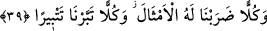
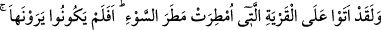
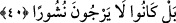
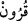
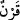

Allah’ın gazabından ve cezâsının isâbet etmesinden yine O’na sığınırız. Rabbânî âlim
Reşîd Yezdî’nin Keşfü’l-esrâr’ında böyle geçmektedir.
“Ve bunlar” zikredilen topluluklar ve ümmetler “arasında” Nuh ve Âd kavmi ile Âd
ve Semûd kavmi arasında, Ress ashabına gelinceye kadar miktarını ancak Allah’ın
bildiği “daha birçok nesilleri” aynı asırlarda yaşayan kimseleri “de”
inkârcılıklarından ötürü helâk ettik.
“ kelimesi, bir zamanda beraber yaşayan topluluk anlamındaki “ kelimesinin
çoğuludur. el-Kâmûs’ta der ki: “En doğrusu bu kelimenin ‘yüz yıl’ anlamında olduğudur.
Çünkü Rasûlulah (a.s.) bir çocuğa “Bir karn yaşa.”[220] diye duâ etmiş, o da yüz yıl
yaşamıştır.
Helâk olan kavim ve milletlerin sayısını o kadar çoktur ki bunu ancak Allah bilir.
Nitekim Allah “Onları Allah’tan başkası bilmez.” (İbrâhim, 14/9) buyurmuştur. Bu
sebepten dolayı “Neseb ilmiyle uğraşanlar, yâni ensâb ilmini bildiğini iddiâ edenler
yalan söylemişlerdir.” derler.
39. Onların her birine (uymaları için) misaller getirdik; (ama öğüt almadıkları
için) hepsini kırdık geçirdik.
“Onların her birine” yâni mezkur helâk edilen ümmetlerden her birine hatırlatarak ve
uyararak “(uymaları için) misaller getirdik;” Onlara peygamberler aracılığıyla
işleyegeldikleri günahlardan ve küfürden alıkoyacak ilginç kıssalar anlatmak sûretiyle
açıklamalarda bulunduk.
“(ama öğüt almadıkları için) hepsini kırdık geçirdik.” Yâni onların her birini
günahlarındaki ısrarlarından sonra hayret verici ve korkunç bir şekilde helâk ettik.
40. (Rasûlüm!) Andolsun (bu Mekkeli putperestler), belâ ve felâket yağmuruna
tutulmuş olan o beldeye uğramışlardır. Peki onu görmüyorlar mıydı? Hayır, onlar
öldükten sonra dirilmeyi ummamaktadırlar.
“(Rasûlüm!) Andolsun” Allah’a yemin olsun ki Kureyşliler Şam’a ticâret seferleri
sırasında “belâ ve felâket yağmuruna tutulmuş olan o beldeye” yâni Sodom’a
“uğramışlardır.”
Sodom Lût kavminin en büyük beldelerinden birisiydi. Üzerine taş yağdırıldı ve helâk